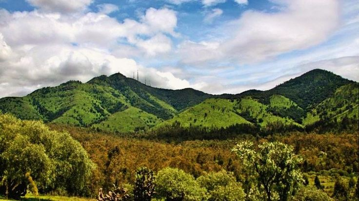
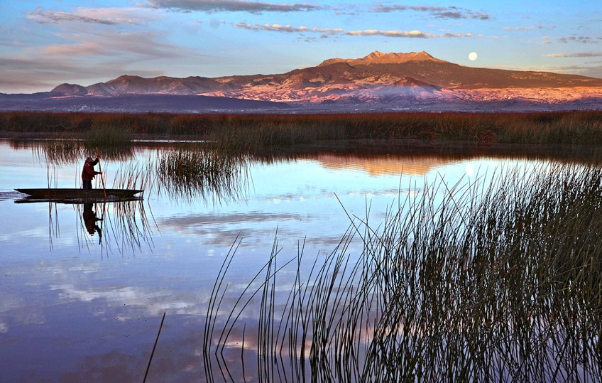
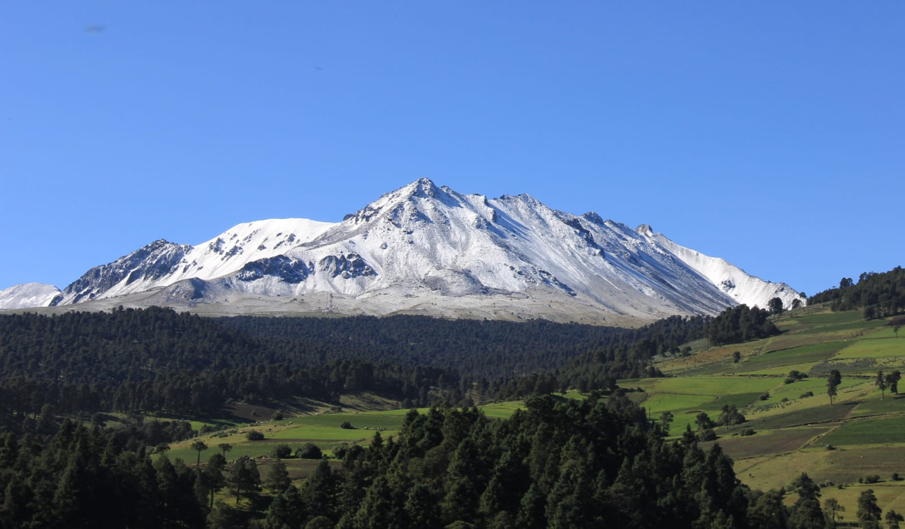
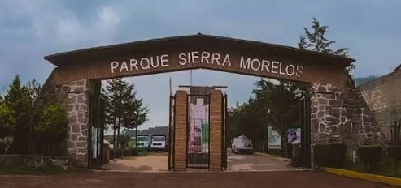

Observa sin invadir
Fotografía y aprende a distancia. La fauna necesita tranquilidad para conservar su comportamiento natural.
Conoce espacios reales del Estado de México, descubre qué animales podrían vivir en ellos y participa para mantenerlos limpios y seguros.
Fotografía y aprende a distancia. La fauna necesita tranquilidad para conservar su comportamiento natural.
Usar caminos marcados evita la erosión, protege plantas y reduce accidentes durante la visita.
Una botella o envoltura puede lastimar animales y contaminar el agua o el suelo durante años.
Cada paisaje cumple una función distinta: conservar bosques, humedales, agua, aire limpio y refugios para muchas especies.

Un espacio natural importante dentro de una zona urbana, donde distintas especies encuentran refugio y las familias pueden convivir con la naturaleza.

Estos humedales conservan agua y vegetación acuática, además de ofrecer alimento y descanso a aves residentes y migratorias.

Sus bosques, laderas y cráter forman un paisaje de gran valor ecológico que ayuda a conservar agua y vegetación de montaña.

Un parque estatal de Toluca y Zinacantepec con senderos, vegetación y espacios para aprender sobre el cuidado del ambiente.
Cada área verde es hogar de muchas especies, aunque a veces no las veamos.
Pueden usar estas zonas para descansar, alimentarse o vivir por temporadas.
Ayudan al equilibrio del ecosistema y suelen vivir entre rocas, pasto o zonas cálidas.
Forman parte del ambiente natural y ayudan a mover semillas entre distintas zonas.
Son esenciales porque ayudan a que las plantas continúen creciendo y reproduciéndose.
Muchas especies se refugian cerca de árboles, pasto y zonas tranquilas, aunque casi no se vean.
Reporta basura, daño ambiental o una zona descuidada. El reporte quedará integrado con el seguimiento de Huellitas.
Aprender sobre una zona, compartir cómo cuidarla o reportar un problema ayuda a que más personas protejan los espacios donde viven los animales.
Información educativa basada en instituciones ambientales del Estado de México y México.